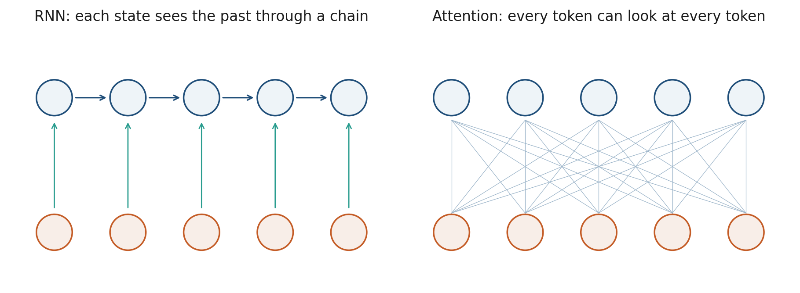

3.1 From Recurrence to Attention
A chain of states is a bottleneck. Attention gives every token a path of length one.
These notes match the lecture slides. Use (slides) on the course hub for the deck.
An RNN compresses the whole past into one vector. Token 1 can affect token 40 only by surviving 39 overwrites. Attention lets every token look at every other token in one step. That is the move from this week’s recurrences to the rest of the course.
1. The bottleneck
To answer “what does it refer to?” the model needs a path from it to a name that may be far left (or right). In an RNN that path is a chain. In attention it is one matrix of scores.

Bahdanau et al. (2015) added attention on top of an encoder–decoder RNN so the decoder could reread the source. Vaswani et al. (2017) dropped the recurrence: self-attention is the layer.
2. What you gain and what you pay
| RNN | Self-attention | |
|---|---|---|
| Path length, token 1 to | ||
| Parallel over time | no | yes |
| Cost in | memory/time for full attention |
Long documents (Week 7: efficiency) will force approximations. For this course’s default, full attention is the model.
3. Practice
-
Why can a transformer GPU-batch a whole sentence’s updates at once, while an LSTM cannot?
-
A 4k-token policy PDF: what is the quadratic cost complaining about?
-
In one sentence, what information did have to store that an attention row can fetch instead?